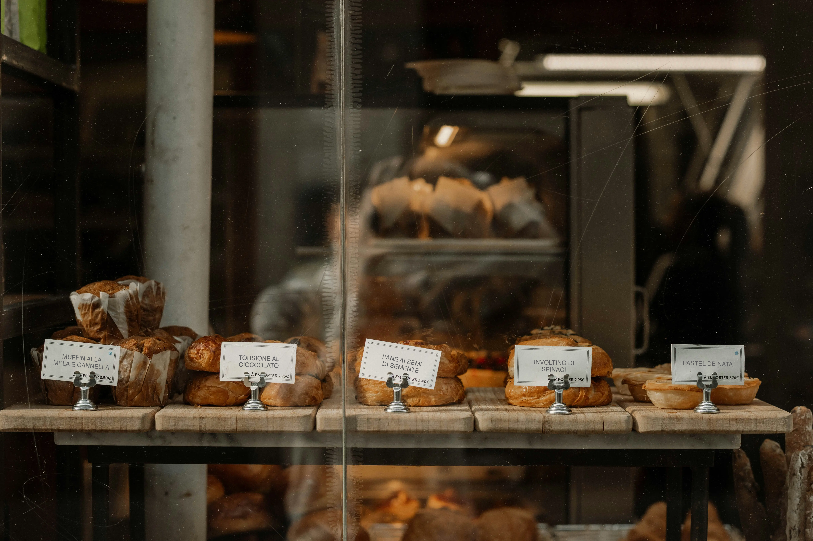
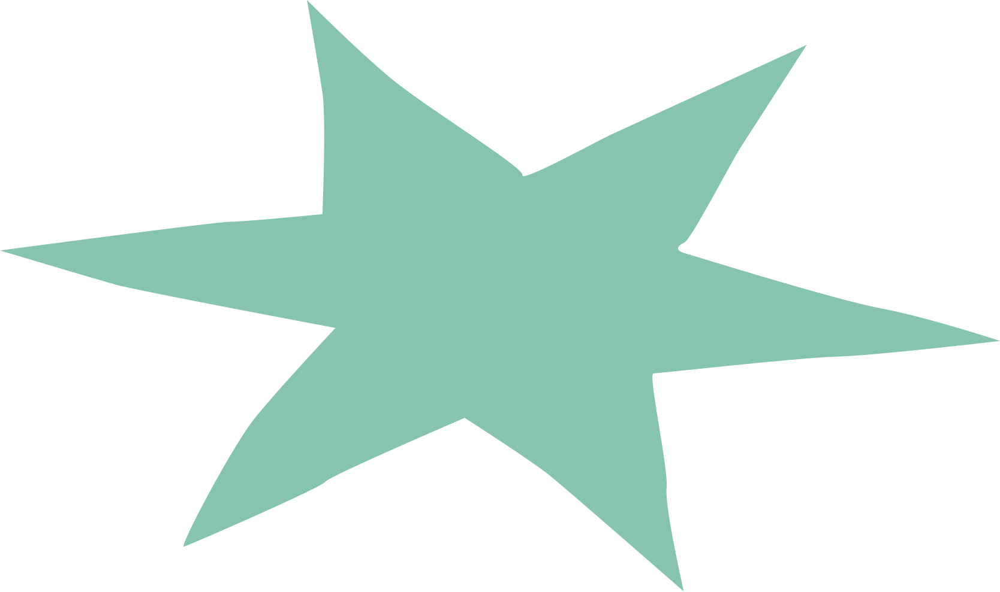
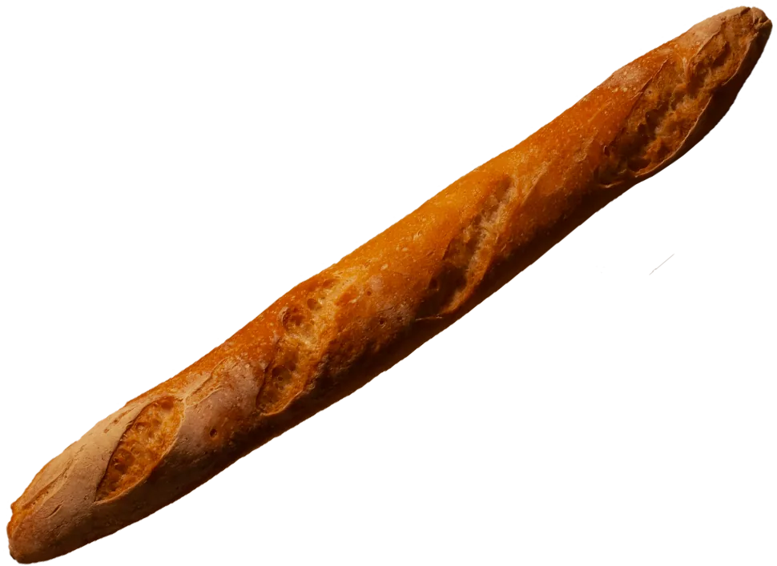
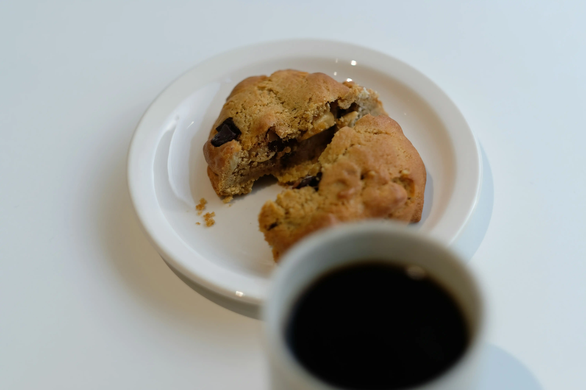
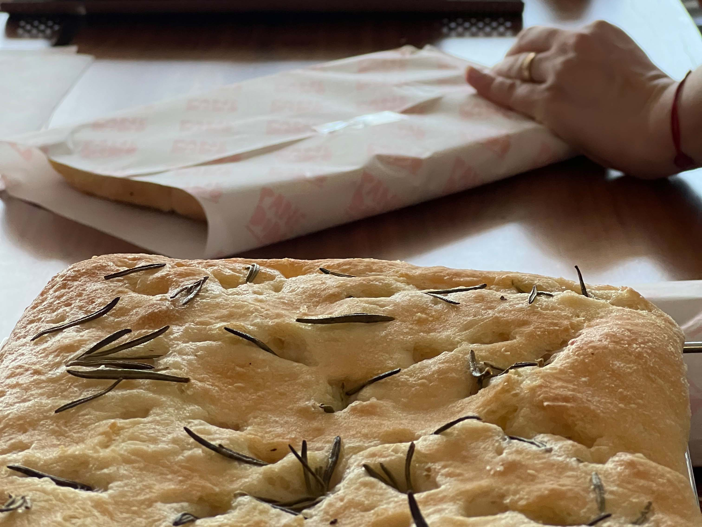
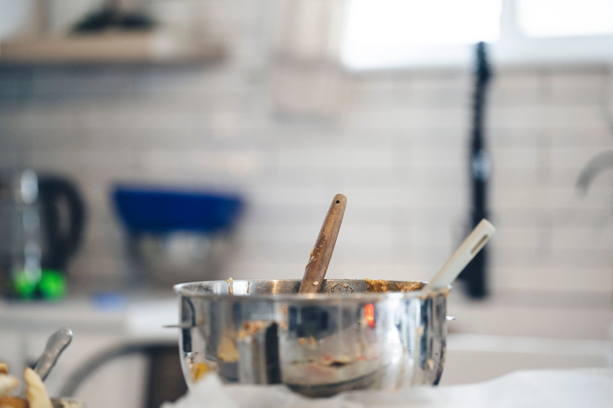
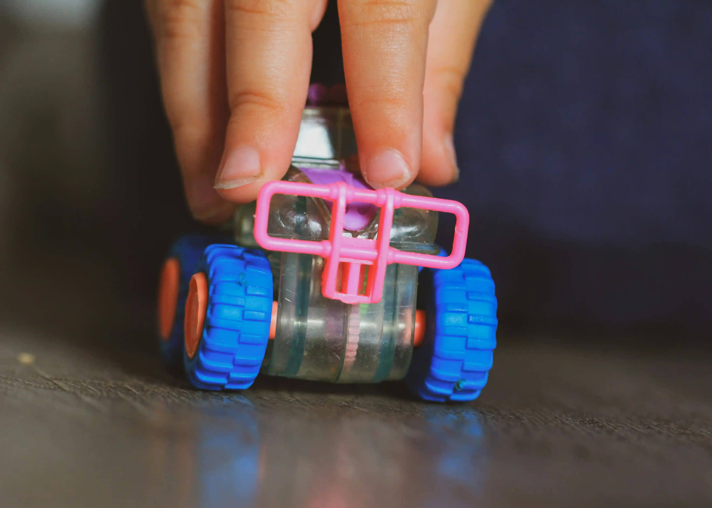
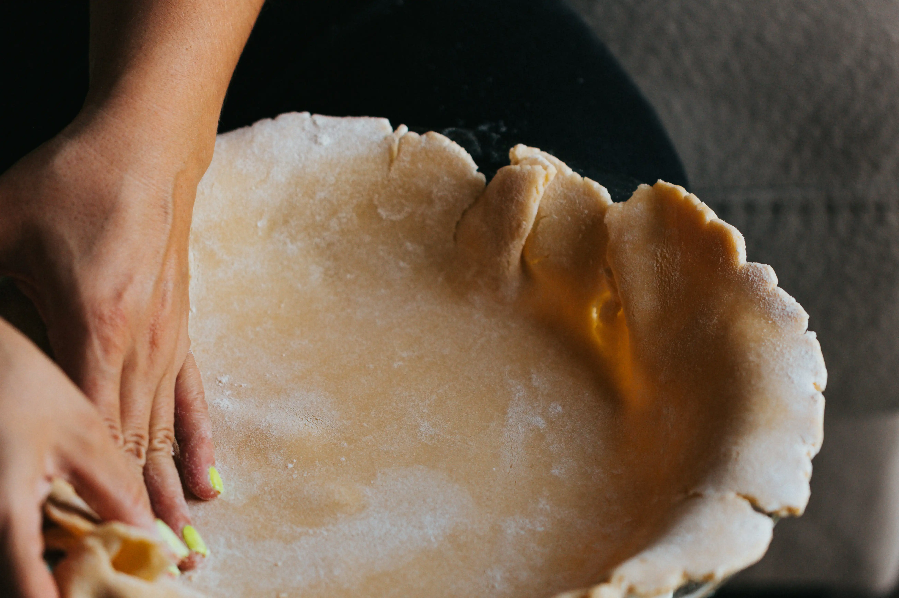
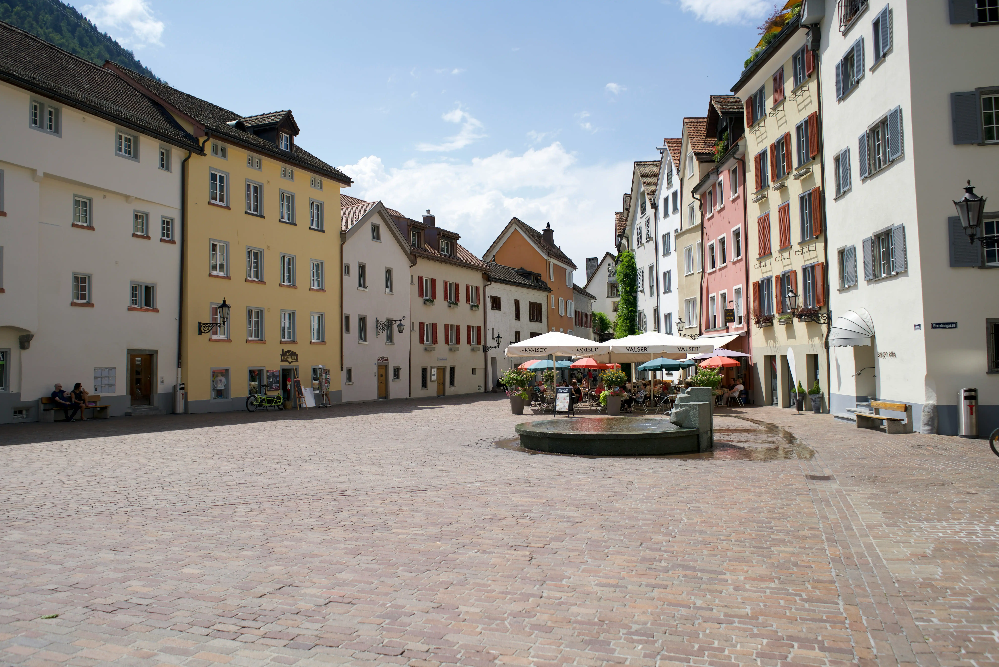

Alles begann
genau hier.

2015 erhält Dora, die Gründerin von Panedodo, die Diagnose Zöliakie. Damals lebt sie noch in Italien, wo das glutenfreie Angebot schon gross ist und immer weiter wächst.

100% Glutenfrei

Panedodo-Weg

2015 erhält Dora, die Gründerin von Panedodo, die Diagnose Zöliakie. Damals lebt sie noch in Italien, wo das glutenfreie Angebot schon gross ist und immer weiter wächst.

2016 zieht Dora in die Schweiz und merkt schnell: Für Zölis gibt’s hier nicht viel zu holen. In den grossen Supermärkten stehen ein paar traurige, abgepackte Produkte im Regal. Im Reformhaus ist die Auswahl etwas grösser – doch auch das wird ein paar Jahre später Konkurs anmelden. Und glutenfreie Cafés oder Bäckereien? Fehlanzeige! Was also tun in dieser glutenfreien Wüste?
Im August 2023 nimmt Dora die Sache selbst in die Hand. Sie beginnt, bei sich zu Hause zu backen. Über einen Onlineshop verkauft sie ihre Kreationen zur Abholung in Chur.

Während rund eineinhalb Jahren entstehen bei Panedodo frische Brote, feine Backwaren und saisonale Spezialitäten, von Weihnachtsguetzli bis zu neuen Kreationen. Neben Privatkund:innen beliefert Dora auch Geschäftskunden, darunter das Restaurant Flavours in Chur.


Manchmal kommt das Leben dazwischen. Ab Weihnachten 2024 legt Dora wegen ihrer Mutterschaft eine Pause ein. Was ursprünglich nur ein Jahr dauern sollte, wird mit dem Wiedereinstieg ins Berufsleben und einem kleinen Kind schwieriger als gedacht. Deshalb bleibt Panedodo vorerst geschlossen.


Dieses Kapitel ist abgeschlossen. Doras Traum von einer eigenen glutenfreien Bäckerei lebt trotzdem weiter. Sie sucht nach einem bezahlbaren Backraum in Chur und Umgebung. Vielleicht wartet dort bereits das nächste Kapitel von Panedodo.
Quiz
Kontakt